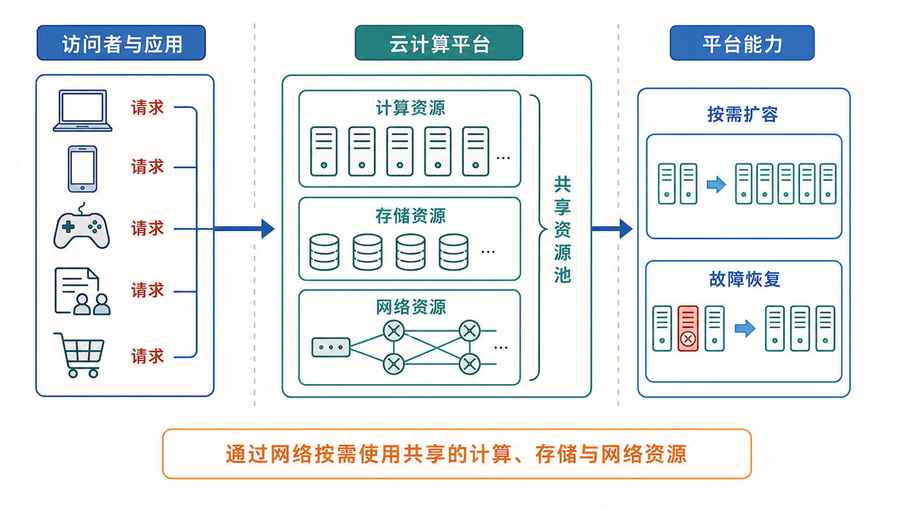

云计算原理与实践：以在线游戏为载体
《云计算原理与实践：以在线游戏为载体》是一门面向希望系统理解并亲手构建现代在线服务的本科实践课程。课程以一个可运行的在线游戏服务端为贯穿案例，从最小的双人对战原型出发，逐步讲解系统在连接规模、并发状态、单机容量、节点故障和负载波动等压力下的演进过程。讲授内容包括客户端—服务器通信、服务器权威裁决与状态同步，Go 并发模型、锁与资源复用，分片、一致性哈希、Gossip、2PC 与 Raft，以及容器化交付、Kubernetes 编排、HPA 和 Serverless 等关键机制。每个阶段均配有代码演示和递进式实验，学生将在指导下运行系统、记录延迟、吞吐和资源占用，修改关键机制并比较结果。课程结束时，学生将能够从零构建并部署一个具备网络通信、并发处理、分布式协作和弹性伸缩能力的在线服务，并形成从现象识别问题、选择机制、权衡性能、正确性、可用性与成本，再通过实验验证方案的系统工程方法。这套方法同样可以迁移到在线协作、电商平台和大模型服务等其他系统。本课程适合具备基本编程能力和数据结构知识的学习者；接触过计算机网络和操作系统则更佳。
